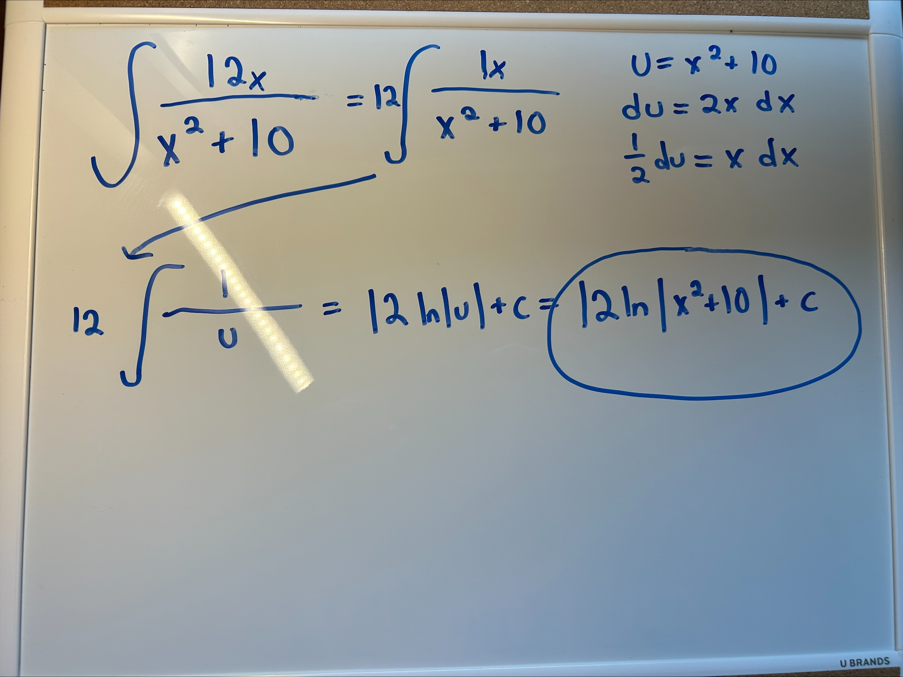

U-Substitution Integration
A really common and useful technique of integration is the u-sub method. This method allows you to cancel out terms in the integral, making it easier to solve. Examples are provided below.

Steps:
1. Identify the 'u' term, meaning what can you take the derivative of and have it equal a term present in the integral
2. Take the derivative of the 'u' term
3. If the derivative has a constant, divide it to the du side.
4. Cancel out the term and solve.